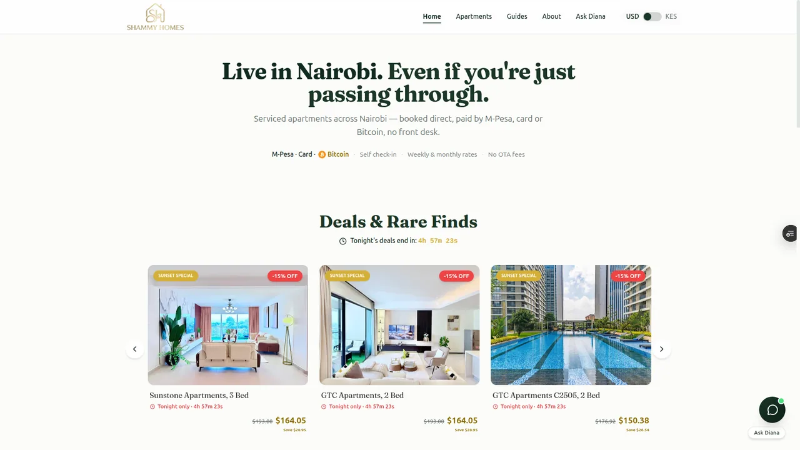

Software Engineer
Nairobi, Kenya (GMT+3)
Open to new roles · remote, across time zones
01About
I build the infrastructure layer that financial software runs on.
Most financial APIs are powerful but incomplete. The gaps they leave are real engineering problems that every developer building on top of them has to solve from scratch. I've been solving them, and making the solutions open source.
Most of my work lives at the intersection of payment infrastructure, tax compliance, and the developer tooling that fintech runs on. I've built TaxID and LinkdFund, and shipped production software across Kenya's financial stack.
When something important is undocumented, broken by design, or left entirely to the developer to figure out, I tend to build the fix and publish it.
02Selected Work

Full-stack short-stay rental platform — Paystack payments, AI guest chat, OTA sync for Airbnb and Booking.com, and a yield engine that auto-prices gaps. Live.
Full-stack short-stay rental platform built for a Nairobi property host — real bookings, Paystack payments (M-Pesa + card), a yield engine that auto-prices vacancy gaps, AI-powered guest chat with WhatsApp integration, and an OTA sync pipeline for Airbnb, Booking.com, and VRBO. Admin dashboard with revenue tracking and guest CRM. PWA with offline support and push notifications. Built on Next.js + FastAPI, deployed on Vercel and Railway. Live and in use.
Telegram bot for Nairobi commuters — tells you when to leave based on live traffic vs. your personal commute history.
Nairobi traffic isn't bad every day — it's bad on specific routes, at specific hours,
in ways Google Maps won't tell you because it doesn't know your commute.
Wayward is a Telegram bot that tells you whether to leave now or wait, based on
live traffic compared against your own historical baseline for that
route, day, and hour. It learns from every trip. Below three data points it stays
quiet. Once it has enough signal, it alerts you the moment congestion actually drops —
not just when it's theoretically clear. The depart command checks current
conditions, forecasts two hours ahead, and sets a watch automatically.
scenic scores alternate routes against Overpass data if you'd rather take
the long way. NLP handled by Gemini so you can just type where you're going.
Python SDK for KRA's eTIMS API — OAuth, VAT arithmetic across five tax bands, idempotency for in-flight failures, and full async support.
KRA's eTIMS API has no official Python SDK. Every developer integrating it rebuilds the same things: OAuth token refresh, VAT arithmetic across five tax bands, idempotency for in-flight network failures — the Schrödinger's Invoice problem where a timeout mid-POST leaves the invoice state unknown. This SDK handles all of that, plus async support with full API parity and a supplier onboarding gateway for informal sector compliance under Finance Act 2023 §16(1)(c). The tax calculator works offline with no credentials.
Flutter package managing the full M-Pesa STK Push lifecycle — from initiation through killed-app recovery, without a proxy server.
Daraja handles STK Push initiation. It doesn't handle what happens when the user locks their phone mid-payment, switches apps, or closes yours entirely before the callback arrives. This Flutter package manages the full payment lifecycle: direct Safaricom API calls without a proxy server, WebSocket delivery of payment status via Appwrite Realtime, automatic state recovery when the app returns from background, and killed-app recovery on next launch via SharedPreferences. Accepts any Kenyan number format — 0712345678, +254712345678, or raw 9-digit — with automatic normalization.
Searchable reference for every Daraja API error code — causes and fixes the official documentation doesn't provide.
Safaricom's Daraja documentation doesn't document its own error codes comprehensively. Developers hit cryptic failures and have nowhere to look. A searchable reference for every error the Daraja API returns — causes, fixes, and context the official docs don't provide. Includes an llms.txt so AI tools can read it correctly. Community-contributed: open a PR to add an error code you've hit.
TypeScript library for idempotent M-Pesa STK Push — atomic callback deduplication, polling fallback, and a webhook relay that survives server restarts.
An npm package. Daraja gives you STK Push initiation. It doesn't handle what happens when the callback never arrives, when Safaricom sends the same callback three times under load, when a client retries and gets double-charged, or when your database says SUCCESS and Safaricom has no record of it. This TypeScript library handles all of that: idempotent initiation, atomic callback deduplication, polling fallback, and a reconciliation pass for payments that fall through every other safety net. v0.2.0 adds a webhook relay server — point your Safaricom CallbackURL at the relay and it guarantees delivery to your app with exponential-backoff retries, even if your server restarts mid-payment window.
03Writing
04Now
Building TaxID — compliance infrastructure for Kenya's informal economy. Thinking about what it means to build software for systems that were never designed to be programmed against.
Most of the interesting engineering problems in East Africa aren't algorithmic. They're about trust, reliability, and what happens when the network drops.
Based in Nairobi, Kenya (GMT +3). ronnyabuto@gmail.com.